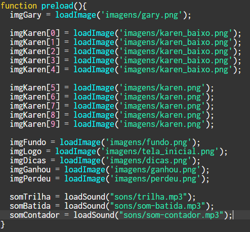

Flappy Bob
Flappy Bob, um jogo modificado por Estudantes do SENAI SC
Inicialização: Ao início do jogo, aparecerá uma tela explicando o objetivo do jogo, como jogar, o que não se deve fazer para que não perca e a quantidade de pontos que você precisa para vencer.

Como aparecer: Os códigos a seguir foram os utilizados para a aparição dos personagens(Gary e Karen), a aparição das imagens utilizadas no jogo e os sons.
Tela de Jogo: Nesta imagem é possível ver como é dentro de jogo, o seu personagem, Gary, e os obstáculos, Karen, percebe-se também o plano de fundo, neste cenário será decidido se você ajudará Gary no seu objetivo ou não.

Quando você Ganha: Se você finalizar o jogo com sucesso,atigindo os 2(dois) mil pontos, aparecerá uma tela de vencedor, parabenizando-o pela sua conquista, finalizando assim o jogo de forma feliz.

Quando você Perde: Diferente de quando você ganha(obviamente), se por um acaso você atingir nos obstáculos do jogo, aparecerá uma tela de "Game Over" indicando que você fracassou em sua missão e Plankton venceu, finalizando o jogo de forma triste.

Como faz para Perder? A forma de perder no jogo é simples, caso atinja algum dos obstáculos presente dentro do jogo, você perde e aparece a tela de "Game Over"

Função Jogar: Essa função é uma das mais importantes pois controla muitas coisas do jogo, a aparição dos personagens e o movimento dos mesmos, a aparição do placar e a adição de pontos, além da colisão e da verificação de vencedor.

Como o Gary se move? A função "movimentaGary" é a responsável pela movimentação do Gary, não é nada muito complexo, um simples código que ao apertar a tecla "W" ele vai para cima e ao apertar a tecla"S" ele vai para baixo.

Karen tambem se movimentar! A função abaixo é usada para movimentar a Karen, esse código é um pouco mais complexo que o outro pois temos no jogo 10(dez) Karen, inicialmente criamos um código para cada uma dela, mas tivemos que mudar depois para variáveis, fazendo assim, que a colisão com o Gary funcionasse e que elas pudessem estar sempre em sincronia.

Como é adicionado ponto? Os pontos são adicionados pelo "x" do Gary, já que é sempre o mesmo, ele só move o "y", adicionamos 1(um) ponto ao placar sempre que o "x" do Gary for 20. Se a pessoa alcançar 2(dois) mil pontos a função "GaryVenceu" é chamada e você vence caso contrário, se você bater, a função "garyPerdeu" é chamada e você perde.